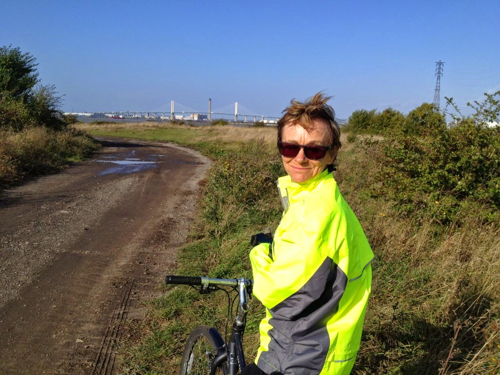
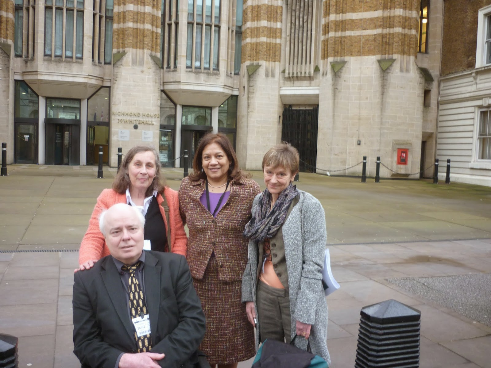

 |
| One of the key players in John's Campaign has been Nicci Gerrard's bike |
{kind=link}
(It's okay, I've stopped shouting. I'll
go on with my story now.)
So there we were in the kitchen that sunny morning and I
said to Nicci “If I ever ran a campaign about anything, that's what
I'd do.” And she said “We should do it.” And her
daughter Anna, who's a junior doctor, said
“Yes, you really should.”
Summer passed, then the autumn came and Nicci's father died. It was a couple of days after his funeral when Nicci and her husband Sean came to cheer up my partner Francis who was laid low by his crumbling back.
“You know our Campaign?” said Nicci. “It's time we did it.” Then she rang the Observer and asked whether she could write an article
about her family's experience.
And THAT was the first Thunderclap.
Paul Webster, the editor who commissioned the piece, said he'd never seen such an overwhelming response. Nicci's article has recorded over 9000 shares on Facebook and that's only the official figure - informal copy&paste doesn't show up. Instantly we became John's Campaign. My son Bertie made us a website, I managed a Facebook page, Sean organised the Twitter account, Claudia Myatt designed us a logo. Valerie Vaz MP sponsored an Early Day Motion: the Alzheimer's Society got in touch. Nicci's article was read at the Dementia Action Alliance AGM. Hospitals began using it to raise awareness in their doctors. People wept, sympathized and understood.
We realised, then, that poor dear John Gerrard wasn't just Nicci's dad and a warm, friendly, reliable and caring human being, he was a Statistic. His story was the story of so many others. Research had shown that it is people like him (and my own mother and Sally Magnusson's mother and thousands more) who are managing to achieve some quality of life, despite the ravages of dementia, who are the people most at risk of collapse if that structure of care is kicked away by a hospital admission. Especially if their family support is unnecessarily curtailed by locked ward doors and strict adherence to visiting hours.
There are good hospitals with open access policies. There are wards which positively welcome carers. But they are still the minority. I was looking at the visiting hours for the two 'elderly' wards in Blank hospital recently: 1pm - 3pm. That's all. No evening visits: no negotiated provision for carers, no welcome for help at mealtimes. It's almost ludicrously inappropriate.
But I won't rant. I will simply state that, now I have learned to understand the stress and anxiety that my mother feels (living with dementia) that I don't let her go to the hairdresser unsupported. An unexpected visit from a chiropodist when she was on her own, recently, felt like a violation. She was bewildered, upset, angry. So, why on earth would I agree to leave her in the alien atmosphere of a hospital to have needles stuck into her and drugs offered by strangers? A place where she will need to remember that she has to press some little button if she wants to go to the lavatory. A place where her bedroom is public and all her familiar possessions and pictures are gone. A place where she isn't even allowed a bunch of flowers for fear of lurking bacteria. A place where her family and friends are only 'allowed' to visit her between 1 - 3pm !!!
There was a time when I considered carrying a small length of bicycle chain in my hand bag in case Mum was whisked away and I would need to be prepared to chain myself to her bed. Then, fortunately, John's Campaign helped me realise that I too was a Statistic and there are many other people who feel the same as me. I've recently met a Chief Nurse who was threatened with removal by Security because she wouldn't leave her mother on her own after a fall. The moment people look at a confused person in a hospital bed and think that could be my dad / mum / spouse / grandparent -- that's the moment they accept that the way we treat the most vulnerable and frail patients in our hospitals must change. Because it'll be us next.
So John's Campaign has been -- and is being -- a most extraordinary experience. Understanding and support have come from all sides. We girded our loins (that meant I put on a skirt, Francis rocked up in his wheelchair and Nicci ran up and down Whitehall looking for a policeman prepared to take charge of her bike) and we armed ourselves with Briefing Papers and Good Practice Documents to follow Valerie Vaz to meet Norman Lamb MP at the Department of Health and Andy Burnham MP in the House of Commons. I was ready to thump the table and cite Human Rights, Deprivation of Liberty and the Equality Act. Francis was hesitating between "Be Kind to the Disabled" and "I'm from Private Eye Magazine so don't bullshit me" and Nicci had no difficulty in simply being herself. That's a devastating combination of sincerity, emotion, a beautiful voice, a story, a genuine desire to see the best in everyone and a waif-like charm that could possibly delude people into failing to realize that her personal determination is at least as steely as my clumsy fist.
None of our strategies were needed. Both men simply said YES.
So now we come to the second thunderclap. Because that wasn't it. We honour the Minister and the Shadow Secretary of State and we trust them to do their best but we know it won't be enough. What's needed for families and carers to be welcomed into every ward of every hospital everywhere, is a widespread culture change.
A few weeks earlier I had come puffing up from Essex to Elephant & Castle: Nicci had swooped down on her bike from Islington and we had met the NHS England Patient Experience team. They understood the situation already -- who better? -- but John Gerrard's story gave them a focus they could use. Wednesday March 11th 2015 is NHS Change Day when health service workers can choose to make personal pledges. The Patient Experience team are preparing a social media Thunderclap. Nurses and doctors and charity workers and friends are handing over access to their Facebook and Twitter contacts, just for this single occasion, and at 11 o'clock on the 11th a message will appear in approx 250,000 inboxes
You too, dear friends, could help with this. Just click the link:
https://www.thunderclap.it/projects/23236-support-john-s-campaign?locale=en
It's spring. The year will be coming round to summer again. You know how everything in the garden seems to shoot up an inch after a thunderstorm and trees burst into leaf? Well, I need to stop campaigning and start fitting-out my boat. So please, do, click that link!
And THAT was the first Thunderclap.
.jpg) |
| "It was as if all the ropes that tied him were cut over those weeks and slowly he drifted from us" |
We realised, then, that poor dear John Gerrard wasn't just Nicci's dad and a warm, friendly, reliable and caring human being, he was a Statistic. His story was the story of so many others. Research had shown that it is people like him (and my own mother and Sally Magnusson's mother and thousands more) who are managing to achieve some quality of life, despite the ravages of dementia, who are the people most at risk of collapse if that structure of care is kicked away by a hospital admission. Especially if their family support is unnecessarily curtailed by locked ward doors and strict adherence to visiting hours.
There are good hospitals with open access policies. There are wards which positively welcome carers. But they are still the minority. I was looking at the visiting hours for the two 'elderly' wards in Blank hospital recently: 1pm - 3pm. That's all. No evening visits: no negotiated provision for carers, no welcome for help at mealtimes. It's almost ludicrously inappropriate.
But I won't rant. I will simply state that, now I have learned to understand the stress and anxiety that my mother feels (living with dementia) that I don't let her go to the hairdresser unsupported. An unexpected visit from a chiropodist when she was on her own, recently, felt like a violation. She was bewildered, upset, angry. So, why on earth would I agree to leave her in the alien atmosphere of a hospital to have needles stuck into her and drugs offered by strangers? A place where she will need to remember that she has to press some little button if she wants to go to the lavatory. A place where her bedroom is public and all her familiar possessions and pictures are gone. A place where she isn't even allowed a bunch of flowers for fear of lurking bacteria. A place where her family and friends are only 'allowed' to visit her between 1 - 3pm !!!
There was a time when I considered carrying a small length of bicycle chain in my hand bag in case Mum was whisked away and I would need to be prepared to chain myself to her bed. Then, fortunately, John's Campaign helped me realise that I too was a Statistic and there are many other people who feel the same as me. I've recently met a Chief Nurse who was threatened with removal by Security because she wouldn't leave her mother on her own after a fall. The moment people look at a confused person in a hospital bed and think that could be my dad / mum / spouse / grandparent -- that's the moment they accept that the way we treat the most vulnerable and frail patients in our hospitals must change. Because it'll be us next.
 |
| Outside the Department of Health |
{kind=link}
None of our strategies were needed. Both men simply said YES.
So now we come to the second thunderclap. Because that wasn't it. We honour the Minister and the Shadow Secretary of State and we trust them to do their best but we know it won't be enough. What's needed for families and carers to be welcomed into every ward of every hospital everywhere, is a widespread culture change.
A few weeks earlier I had come puffing up from Essex to Elephant & Castle: Nicci had swooped down on her bike from Islington and we had met the NHS England Patient Experience team. They understood the situation already -- who better? -- but John Gerrard's story gave them a focus they could use. Wednesday March 11th 2015 is NHS Change Day when health service workers can choose to make personal pledges. The Patient Experience team are preparing a social media Thunderclap. Nurses and doctors and charity workers and friends are handing over access to their Facebook and Twitter contacts, just for this single occasion, and at 11 o'clock on the 11th a message will appear in approx 250,000 inboxes
“This #nhschangeday support John's Campaign for open hospital visiting for people with dementia http://www.johnscampaign.org.uk/
You too, dear friends, could help with this. Just click the link:
https://www.thunderclap.it/projects/23236-support-john-s-campaign?locale=en
It's spring. The year will be coming round to summer again. You know how everything in the garden seems to shoot up an inch after a thunderstorm and trees burst into leaf? Well, I need to stop campaigning and start fitting-out my boat. So please, do, click that link!
{kind=link}